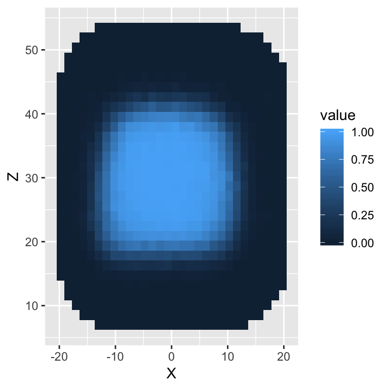
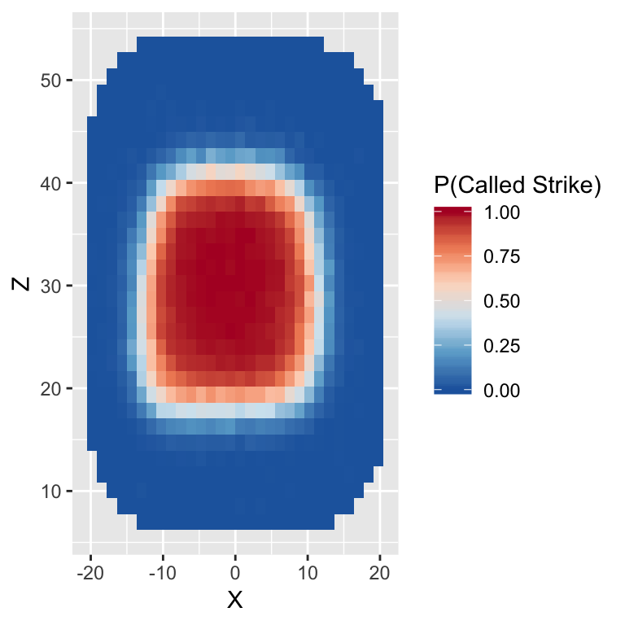
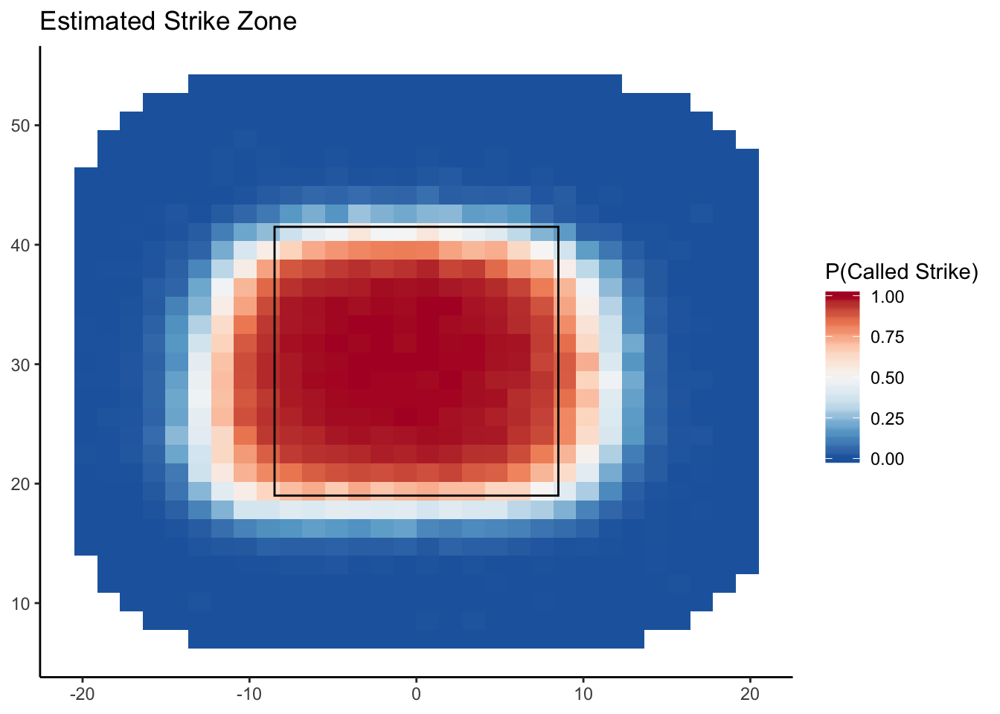

We understand that it’s been quite a busy week and that we’ve thrown a ton of material your way. We’d like you to take some time today and this weekend to go through the notes of the first four lectures and first three problem sets carefully with your team and RTA.
In this part, we will continue to use heatmaps (introduced briefly in Lecture 2) to explore the strike zone in baseball. We will focus on data collected by PITCHf/x. At a high-level, PITCHf/x consists of a set of cameras installed at every ballpark which tracks the motion of each pitch. For more information about the system, check out this article by Mike Fast The data collected by PITCHf/x is then transmitted to the MLB Gameday application along with contextual information about the pitch. The data contains the measurements from the PITCHf/x system recorded in 2015.
> library(tidyverse)
> pitches <- read_csv("data/pitchfx_2015.csv")
Parsed with column specification:
cols(
Description = col_character(),
X = col_double(),
Z = col_double(),
COUNT = col_character(),
P_HAND = col_character(),
B_HAND = col_character()
)The columns are: * Description: Records the outcome of the pitch (Called Strike, Swinging Strike, Foul, etc.) * X and Z: the horizontal and vertical coordinates of the pitch in inches. Note that the center of home plate corresponds to X = 0. Note that the X coordinate are recorded from the catcher’s perspective, with negative values on the left and positive values on the right. In this coordinate system, a right-handed batter will line up to the left (i.e. negative X values). * COUNT: The ball-strike count for each pitch * P_HAND and B_HAND: the handedness of the batter and pitcher.
To visualize the strike zone, we are going to want to filter out only the called strikes and balls. Moreover, it will be helpful to convert the Description to numeric values (1 for called strikes, 0 for balls). Use the pipe operator, filter(), mutate(), and case_when() to create a new tbl called_pitches containing only the called strike and balls and that includes a new column “Call” whose value is 0 for balls and 1 for called strike.
To get started, we will create a plot and then add to it sequentially:
> g <- ggplot(data = called_pitches)stat_summary_2d() function, which takes three aesthetics:By default, stat_summary_2d() divides the plane into rectangles based on the aesthetics x and y, and then computes the average value of z for observations in the bin. We can add this layer to our plot g as follows and obtain the following plot
> g <- g + stat_summary_2d(mapping = aes(x = X, y = Z, z = Call))
> g
stat_summary_2d() has added a legend to our plot. However, the title of the legend is a somewhat non-informative. The color scheme does not distinguish between different values particularly well.> g <- g + scale_fill_distiller("P(Called Strike)", palette = "RdBu")
> g
xmin and xmax arguments give the horizontal limits of the strike zone (in this case, the coordinates of the edges of the strike zone) and the ymin and ymax arguments are the average vertical limits measured by PITCHf/x. Note: these values were pre-computed using a much larger dataset> g <- g + annotate("rect", xmin = -8.5, xmax = 8.5, ymin = 19, ymax = 41.5, alpha = 0,
+ color = "black")We can additionally make the plot a bit more attractive visually as follows:
> g <- g + theme_classic()
> g <- g + theme(axis.title.x = element_blank())
> g <- g + theme(axis.title.y = element_blank())
> g <- g + labs(title = "Estimated Strike Zone")
> g
The file “nba_boxscore.csv” lists detailed box score information about every NBA player in every season ranging from 1996–97 season and 2015-16 season. We will look at team shooting statistics over this 20-season span.
raw_boxscore.Parsed with column specification:
cols(
.default = col_integer(),
Player = col_character(),
Pos = col_character(),
Tm = col_character()
)
See spec(...) for full column specifications.The column “Tm” lists the team on which each player played. We can look at the relative frequencies of the teams using the table() function. This function takes a vector and returns the frequencies of each unique value.
> table(raw_boxscore[["Tm"]])
ATL BOS BRK CHA CHH CHI CHO CLE DAL DEN DET GSW HOU IND LAC
347 350 72 183 101 335 34 359 356 354 321 355 359 319 347
LAL MEM MIA MIL MIN NJN NOH NOK NOP NYK OKC ORL PHI PHO POR
319 271 348 337 328 298 161 34 63 345 144 340 352 348 338
SAC SAS SEA TOR TOT UTA VAN WAS WSB
332 342 195 366 1047 309 80 333 15 Looking at the list of teams you may see a few that you don’t recognize. For instance, there are 15 players listed as playing on “WSB”. We can use filter() to take a closer look at these players
> filter(raw_boxscore, Tm == "WSB")
# A tibble: 15 x 22
Season Player Pos Age Tm G GS MP FGM FGA TPM
<int> <chr> <chr> <int> <chr> <int> <int> <int> <int> <int> <int>
1 1997 Ashra… PF 25 WSB 31 0 144 12 40 1
2 1997 Calbe… SG 25 WSB 79 79 2411 369 730 4
3 1997 Matt … C 27 WSB 5 0 7 1 3 0
4 1997 Harve… PF 31 WSB 78 25 1604 129 314 28
5 1997 Juwan… SF 23 WSB 82 82 3324 638 1313 0
6 1997 Jaren… SG 29 WSB 75 0 1133 134 329 53
7 1997 Tim L… SG 30 WSB 15 0 182 15 48 8
8 1997 Gheor… C 25 WSB 73 69 1849 327 541 0
9 1997 Tracy… SF 25 WSB 82 1 1814 288 678 106
10 1997 Gaylo… SG 27 WSB 1 0 6 1 3 0
11 1997 Rod S… PG 30 WSB 82 81 2997 515 1105 13
12 1997 Ben W… PF 22 WSB 34 0 197 16 46 0
13 1997 Chris… PF 23 WSB 72 72 2806 604 1167 60
14 1997 Chris… PG 25 WSB 82 1 1117 139 330 58
15 1997 Loren… C 27 WSB 19 0 264 20 31 0
# … with 11 more variables: TPA <int>, FTM <int>, FTA <int>, ORB <int>,
# DRB <int>, AST <int>, STL <int>, BLK <int>, TOV <int>, PF <int>,
# PTS <int>These fifteen players during the 1996-97 season on the Washington Bullets, which was renamed the Washington Wizards at the end of that season. There are a few other examples: VAN refers to the Vancouver Grizzlies who moved to Memphis and CHH refers to the original Charlotte Hornets franchise, which ultimately relocated to New Orleans.
One of the teams listed is “TOT”. This does not refer any specific team. Instead these rows record the total statistics recorded by a player if he played for multiple teams in a single season. For the purposes of understanding how team shooting statistics changed over time, we will not want to include these rows in our analysis.
filter(), group_by(), summary(), and mutate() to create a new tbl called team_boxscore that does the following:Tm == "TOT")filter() to create a new tbl called reduced_boxscore that pulls out the rows of team_boxscore corresponding to the following teams: BOS, CLE, DAL, DET, GSW, LAL, MIA, and SAS. Then create a plot of these teams’ three point percentage in each season. Be sure to color the points according to the team. What patterns do you notice?Once you finish reviewing the material from earlier this week, we’d like you to use some of the tools we introduced in Lecture 4 to read in new data into R. Then, using the skills you’ve learned in the first four lectures, we’d like to you do some type of analysis with this data. It doesn’t need to be sophisticated – even making a few interesting visualizations or computing some interesting summaries is enough. We just want you to get some practice working with some data that you’ve collected yourselves!